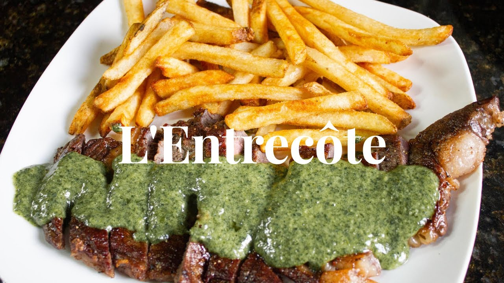

L'entrecote Steak Sauce Recipe
Home

Description
Located right in the heart of Bordeaux steps away from the Grand Théâtre, L’Entrecôte’s menu
features one thing and one thing only: 170 grams of sliced beef sirloin served with the restaurant’s
famous secret sauce and as many fries as you can eat.
The formula has been unchanged since 1962 since founder Henri Gineste opened the first location of his
now popular restaurant in Toulouse. And since, the well-known restaurant has opened locations in
Bordeaux, Nantes, Montpellier, Lyon and even Barcelona.
Now, for the first time, I'm pleased to reveal the mysteries of L'entrecote's secret sauce,
so that you can enjoy this french delicacy from the comfort of your own kitchen.
What you'll need:
Serves 6
- 250 g butter
- 1 medium shallot, finely chopped
- 1 good tablespoon of chopped tarragon leaves, fresh
- 2 tablespoons chopped chervil, fresh
- 4 large basil leaves or 8 small ones
- 1 level tablespoon of strong mustard
- 1 egg yolk
- 1 teaspoon of Worcestershire Sauce
- 1 level teaspoon of freshly ground nutmeg
- 5 walnut kernels
- 8 to 10 anchovy fillets, depending on size. In salt and oil - not vinegar
- 5 large or 10 small capers
- 1 teaspoon of lemon juice
- 2 level teaspoons of finely ground pepper (white or black)
- Salt (to taste)
For the meat: 1.2 kg of sirloin, rib steak or beef tenderloin,
to be cut into 2 cm thick slices after frying
What you'll need
- Small saucepan
- Blender
- Electric Whisk
- Large frying pan
- Mixing bowl
- 6 plates heated in the oven
How to prepare
- Melt a little butter in a small saucepan, and fry the shallots for 2-3 minutes over a low heat.
- Add in the rest of the butter and melt slowly.
- Once the butter has just melted, add in the herbs, pepper, nutmeg, capers, and anchovies.
Pour all that into a blender, and give it a whizz until everything is finely mixed.
- Put the mustard, egg yolk, lemon juice, and Worcestershire sauce into a bowl. Give it a quick whisk until mixed.
- Fry your steak on a searing hot saucepan with a little peanut oil. A minute and a half on each side for rare.
Wrap the steak in foil and leave to rest.
- Pour your warm butter mixture into a bowl, and whisk while gradually adding the mustard and egg mixture
until the sauce reaches a mayonnaise-like consistency.
- Prepare a dish, or the sink with a few cm of cold water. Pour 2/3 of the sauce into a saucepan, and
heat gently while stirring until the sauce begins to split (Do NOT allow it to boil, or you'll end up with scrambled egg in your sauce).
Immediately place the saucepan into the dish/sink
containing the cold water, and continue to stir for a good 30 seconds while the sauce stops cooking.
- Add the contents of the saucepan back to your original sauce, and mix together gently with a whisk, to partially bind the sauce
- Slice your steak, salt your sauce to taste, and serve it all up on a hot plate, along with some french fries.
Et Voila!